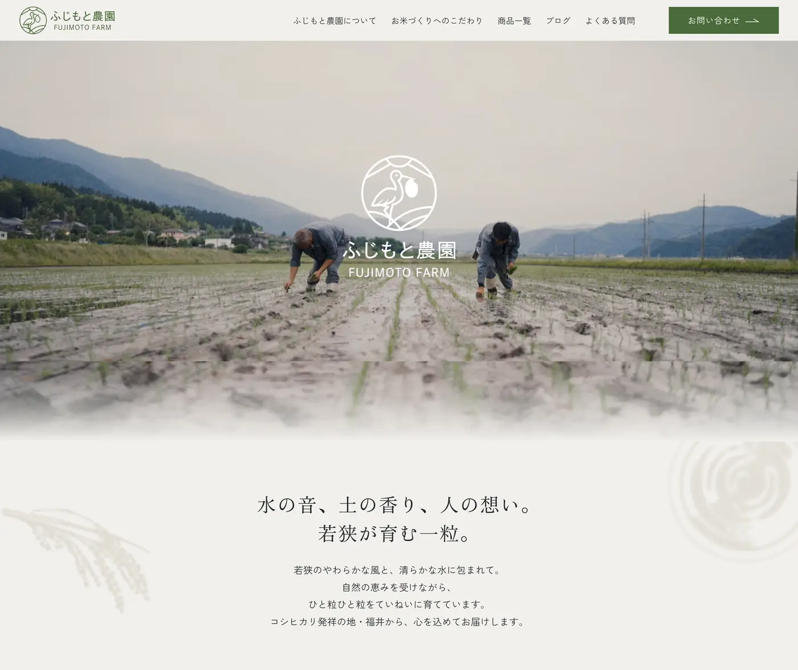
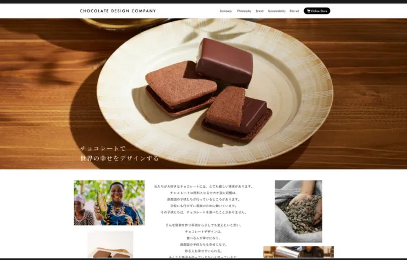
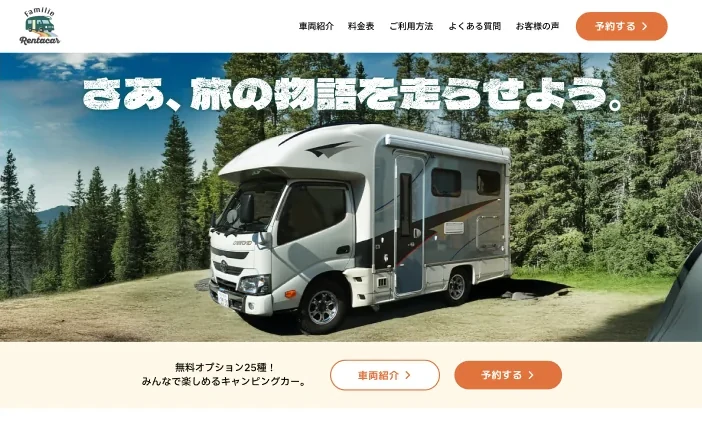
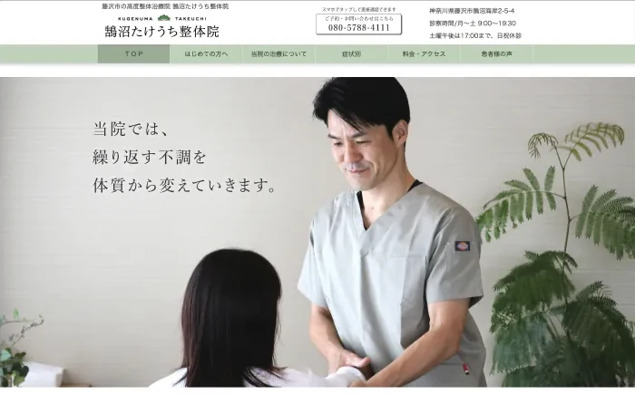

UI/UX デザイン ／ 情報設計
使いやすさを成果まで届ける
顧客の声を聞き、 画面をつくり、 仕組みまで設計してきました。
できること
要件が固まる前から、運用が始まったあとまで。担当できる範囲を、スキルではなく工程で書きます。
要件整理
PdM・エンジニアと論点を整理します。決まったことと未確定のことを分けて記録し、曖昧な箇所を先に潰します。
情報設計
画面を描く前に、業務を工程に分解します。どこで判断が止まるのかを先に把握すると、何を作らないかを決められます。
画面設計
静止画では終わらせません。プロトタイプまで作って、ホバーや状態の変化を実際に動かして確かめます。
デザインシステム構築
Figma でコンポーネントを設計し、判断基準をドキュメントに移します。運用チームが自分で更新できる状態にします。
制作実績
各案件の担当範囲を明記しています。
現在進行中｜UI/UX・業務システム
Web サイト

農園サイトリニューアル ブランド設計・ロゴデザイン・UI/UX設計・STUDIO実装
コーポレートサイト制作 ディレクション・情報設計・採用導線設計
レンタカー予約サイト ブランド設計・ロゴデザイン・UI/UX設計・STUDIO実装
治療院サイトリニューアル 情報設計・コンテンツ構成設計・デザイン・実装自主制作｜UI デザイン
制作実績をすべて見る成果とヒストリー
成果
チョコレートデザイン株式会社（VANILLABEANS）／ 2013 - 2024
11年のヒストリー
受注電話を取るところから始めて、商品ページをつくり、最後は事業の仕組みを設計するところまで。担当するレイヤーは変わりましたが、やっていたことはずっと同じです。
- 01顧客対応2013 - 2015
- 02画面2015 - 2020
- 03事業2021 - 2024
- 04構造農園支援
今村 美紗 ／ Mim.design
2013年から11年間、チョコレートデザイン株式会社（VANILLABEANS）に在籍しました。受注電話を取るカスタマーサポートから始まり、Webデザイン、最後はブランドマーケティングのリーダーとして、会員制度や商品企画の設計までを担当しました。
現在は、製造業向け BtoB SaaS のプロダクトデザインと情報設計、BtoC アプリの UI 設計、大手証券会社のデザイン品質管理を担当しています。
やっていることは11年前と変わりません。使う人の状況を聞き取り、業務の流れを整理して、運用が続く形に落とす。扱う対象が、チョコレートの商品ページから業務システムの画面に変わっただけです。
つくったものを渡して終わりにはせず、運用が始まったあとの改善にも関わっています。
得意領域
- 間違いが実害につながる領域の情報設計（業務システム・医療）
- 複雑な情報を、迷わない形に構造化すること
- 運用チームが自分で回せる状態まで設計すること